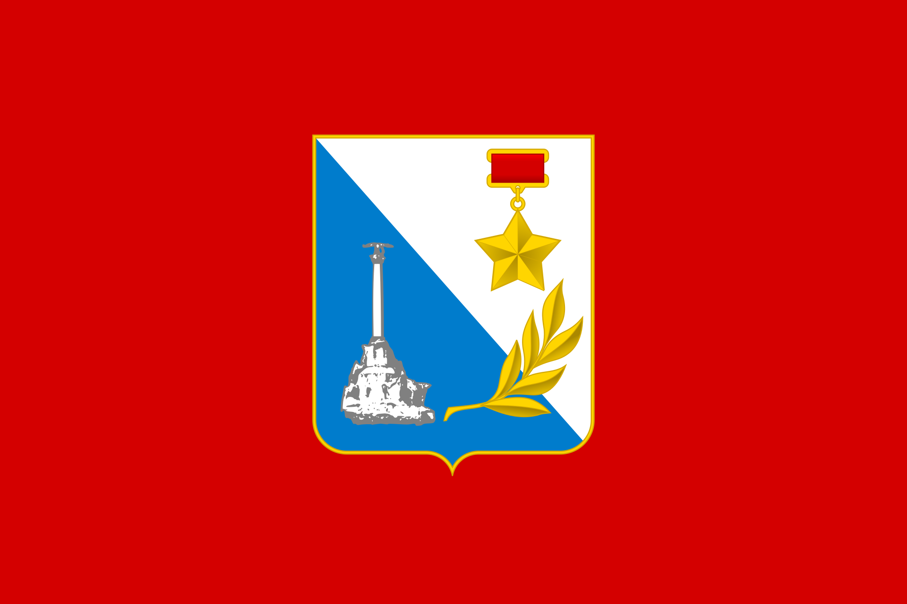

Материал из Википедии — свободной энциклопедии
Севастополь— город на юго-западе Крымского полуострова, на побережье Чёрного моря. Незамерзающий морской торговый и рыбный порт, промышленный, научно-технический, рекреационный и культурно-исторический центр. Носит звание «Город-Герой». В Севастополе расположена главная военно-морская база Черноморского флота Российской Федерации. До 2014 года в городе также располагалась главная военно-морская база Военно-морских сил Украины. Город Севастополь входит в перечень исторических поселений федерального значения России[13] и в список исторических населённых мест Украины[14]. В 2014 году Россия аннексировала Крымский полуостров, включая Севастополь[15]. Государственная принадлежность территории Севастополя с тех пор является предметом разногласий между Россией и Украиной. Согласно административному делению Украины, частью которой он признаётся большинством государств — членов ООН[16], Севастополь является регионом Фактически Севастополь является субъектом Российской Федерации — городом федерального значения
Основан в 1783 году как военно-морской порт и город в Ахтиарской бухте; название бухты — по татарской деревне Ахтияр или Акъяр (крымскотатарское ак- «белый», яр — «крутой берег, обрыв у моря»). В 1784 году, в соответствии с бытовавшей тогда в Российской империи традицией давать новым городам названия на греческий манер, городу было присвоено название Севастополь — «священный город» (греческое себастос — «высокочтимый, священный», полис — «город»). В 1797 году император Павел I переименовал город в Ахтияр[17], но и в период действия указа Павла I город параллельно с Ахтияром называли и Севастополем, о чём свидетельствуют карты и атласы тех лет издания. В 1826 году сенатским указом городу возвращено название Севастополь[18].
Флаг Севастополя
Флаг Севастополя — прямоугольное полотнище бордового цвета в центре которого помещено цветное изображение герба Севастополя согласно официальному описанию герба. Соотношение ширины флага к длине − 2:3; габаритная ширина изображения герба на флаге составляет 2/5 части от длины полотнища флага. Герб города представляет собой скошенный геральдический щит французского типа. В серебряном (на флаге — белом) верхнем поле расположено изображение медали «Золотая Звезда», которой город был награждён в 1965 году за мужество и героизм, проявленный защитниками города в годы Великой Отечественной войны. В лазоревом (на флаге — синем) нижнем поле изображён памятник кораблям, затопленным в годы Крымской войны. Два поля объединяет золотая лавровая ветвь, символизирующая историческую преемственность между прошлым и настоящим города. Гимном города является композиция «Легендарный Севастополь» композитора Вано Мурадели и поэта Петра Градова, исполненная впервые в 1954 году. Официальный статус композиции, как гимна города Севастополя, был установлен решением I сессии горсовета XXII созыва от 29 июля 1994 года.
По данным Всероссийской переписи населения 2020 года, на 1 октября 2021 года по численности населения город находился на 31-м месте из 1119[153] городов Российской Федерации[154]. По итогам переписи населения в Крымском федеральном округе по состоянию на 14 октября 2014 года, численность постоянного населения города Севастополя (как субъекта РФ) составила 393 304 человека. Большую часть населения города составляют русские — 81 % (303,1 тыс. человек); на втором месте украинцы — 14,2 % (52,9 тыс. человек)[5]. По данным Росстата по состоянию на 1 января 2023 года численность населения города Севастополя (как субъекта РФ) составила 558 273 человека, в том числе городское население — 405 810 человек (92,98 %) и сельское — 30 653 человека (7,02 %)[2]. По данным на 01 января 2021 года общая численность постоянного населения — 509 992 человек (149 897 детей), из них мужчин — 46,4 %, женщин — 53,6 %. Плотность населения на территории города федерального значения Севастополь составляет 590,27 чел. на 1 км²[156]. По данным статистики в 2014 году в городе (включая г. Инкерман, пгт Кача и сельские советы) родился 4881 ребёнок, что на 418 детей больше, чем год назад. Также, за анализируемый период умерло 5537 человек, что на 211 больше по сравнению с предыдущим годом. Миграционный прирост в Севастополе за прошедший год составил 13 565 человек, в основном, за счёт большого числа вынужденных переселенцев из Донецкой и Луганской областей Украины и из регионов РФ[. К концу 2020 года население Севастополя официально превысило полмиллиона жителей.
| № | Население | Год |
|---|---|---|
| 1 | 345.456 | 2001 |
| 2 | 456.647 | 2014 |
| 3 | 556.345 | 2023 |
Основная статья: Законодательное собрание города Севастополя
В соответствии с городским уставом, законодательным органом Севастополя является Законодательное собрание города Севастополя, состоящее из 24 депутатов. 16 человек избираются по партийным спискам и 8 по мажоритарным. Действующий состав городского парламента избран 14 сентября 2014 года[179]. Председателем Законодательного собрания с 6 сентября 2016 года является Екатерина Алтабаева. Высшим должностным лицом и главой исполнительной власти, согласно уставу, является губернатор Севастополя, избираемый путём прямых выборов (до внесения поправок в устав [ноябрь 2016 года] — Законодательным собранием из числа кандидатов, представленных президентом России). Исполняющим обязанности губернатора с 28 июля 2016 года является Дмитрий Овсянников. В городе действуют Советы депутатов муниципальных образований города Севастополя избираемых сроком на два года, первый созыв действовал с 2014—2016 год[181].
Согласно ряду аналитических исследований, по стоимости жилья Севастополь занимает 5 место среди городов России. По состоянию на 2019 год, средняя стоимость 1 квадратного метра жилья на вторичном рынке составляет около 67 тысяч рублей. Причём цена квадратного метра в Севастополе больше зависит от месторасположения (расстояния до моря), чем от качества жилья. На первичном рынке не прослеживается снижение цен по мере удаления участка от центра города. Общая площадь жилого фонда Севастополя в 2016 году составляла 7,7 млн м². При этом, в 2014 году общая площадь нового сданного жилья в Севастополе составила 157 тыс. кв. метров, в 2015 году — 135 тыс. кв. метров, а в 2016 году — уже 292 тыс. кв. метров.
За январь-сентябрь 2018 года производство продукции сельского хозяйства (в сопоставимых ценах) по отношению к соответствующему периоду 2017 года уменьшилось на 6,1 %. По предварительной оценке, объём производства продукции сельского хозяйства всех сельхозпроизводителей в действующих ценах составил 1,4 млрд рублей. Поголовье крупного рогатого скота в хозяйствах всех категорий составляло 2,5 тыс. голов и увеличилось на 0,1 % по сравнению с 01.10.2017, из него коров — 1,1 тыс. голов (на 0,2 % меньше); свиней — 0,9 тыс. голов (на 13,3 % меньше), овец и коз — 1,1 тыс. голов (на 37,7 % меньше), птицы всех видов — 173,5 тыс. голов. ПК Севастополя включает 21 тыс. га земель сельхозугодий, на которых расположены 4,3 тыс. га виноградников (со средней урожайностью 44,5 ц/га), и около 800 га садов, «имеется небольшое животноводство» в количестве 2481 голов крупного рогатого скота. Виноградарско-винодельческая является ведущей отраслью агропрома города. Площадь, занятая виноградниками — около 4,3 тыс. га, в 2018 году заложены новые виноградники на площади 158 га. Всего же, с 2014 по 2018 год было обновлено 980 гектаров виноградников и заложено свыше 840 гектаров новых[208]. Также, по данным за 2018 год, в городе было разлито около 16 млн бутылок вина, что поставило Севастополь на 4-е место среди регионов России. Шампанское и игристые вина выпускает «Севастопольский винзавод», марочные вина — «Инкерманский завод марочных вин». Завод является одним из крупнейших налогоплательщиков города — в 2015 году было уплачено налогов на общую сумму 628 млн рублей. На предприятии занято 1300 человек. Кроме того, в окрестностях города с 1968 года расположены виноградники агрофирмы «Золотая балка», которая запустила собственное производство с ежегодным объёмом продукции в 5,5 млн бутылок игристых вин
Оборот розничной торговли за январь-сентябрь 2018 г. составил 48,4 млрд рублей, что на 1,8 % больше, чем за сопоставимый период 2017 года. Оборот общественного питания за январь-сентябрь 2018 г. относительно сопоставимого периода предыдущего года увеличился на 0,6 % и составил 3,9 млрд рублей. На территории города действуют более 35 рынков, наиболее крупные из них — Центральный, вещевой и оптовый продуктовый на 5-м км Балаклавского шоссе, на Корабельной стороне, в Балаклаве, на ул. Юмашева, ул. Хрюкина, ул. Толстого, «Московский», в Стрелецкой бухте, на Северной стороне, автомобильный рынок на мысе Фиолент. В Севастополе функционируют торговые объекты крупных международных, федеральных, а также местных розничных сетей, среди них — Novus, ПУД, Фуршет, Сильпо, Metro AG, Яблоко, DNS. Также действует строительные супермаркеты Эпицентр и Добрострой. Помимо этого, население Севастополя обслуживается рядом торговых центров, крупнейшими из которых являются ТЦ «Муссон» (площадью более 50 000 м²) и ТЦ «Sea Mall» (площадью более 20 000 м²). Здание ГУМа является памятником архитектуры.
В Севастопольском регионе располагается 49 км пляжей, работают более 80 гостиниц и более 200 гостевых домов, 4 санатория-профилактория, 9 пансионатов, 4 автокемпинга, 10 яхтклубов и более 10 дайвинг-центров, более 80 баз отдыха и объектов, приравненным к ним. В 2014 году было обслужено более 250 тысяч туристов и более 1 млн 640 тысяч экскурсантов. Также, ежегодно Севастополь посещает свыше 100 тысяч иностранных туристов более чем из 45 стран мира. Поступления в бюджет города от туристической отрасли составили 668 млн рублей.
Общее число заведений здравоохранения Севастополя на 1 января 2012 года составляет 38. Сеть коммунальных медицинских заведений города сохранена и составляет 26 поликлиник, больниц, диспансеров и вспомогательных служб. Плановая мощность поликлиник (посещений в смену) составляет 6930, число коек в стационаре 2893 (10 больниц и 3 диспансера). Численность коек в стационарах приведена к с оответствующему соц. нормативу для г. Севастополя (79,0 коек на 10 тыс. населения). Крупнейшим медицинским учреждением Севастополя является городская больница № 1, основанная в 1868 году. Кадровое обеспечение: врачи — 2042 чел.; средний мед. персонал — 4078 чел. На 1 ноября 2016 года на диспансерном учёте в центре СПИДа наблюдается — 3474 чел. из них с диагнозом СПИД — 224 чел.